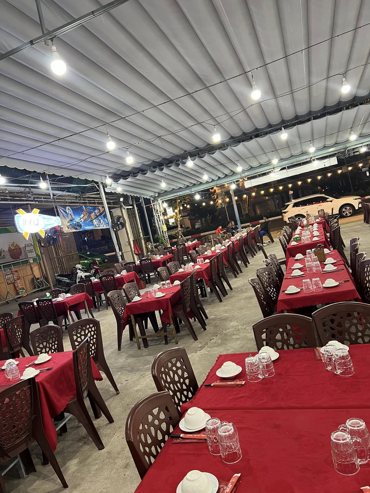
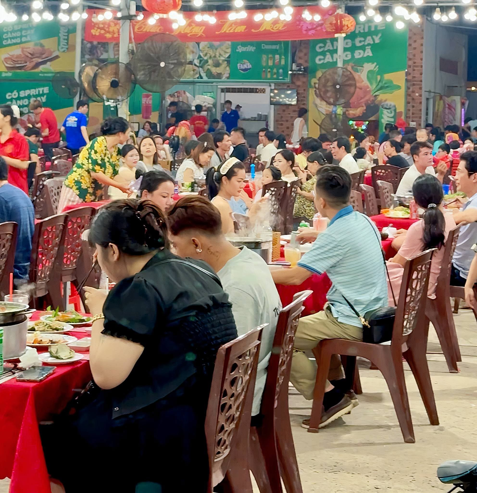
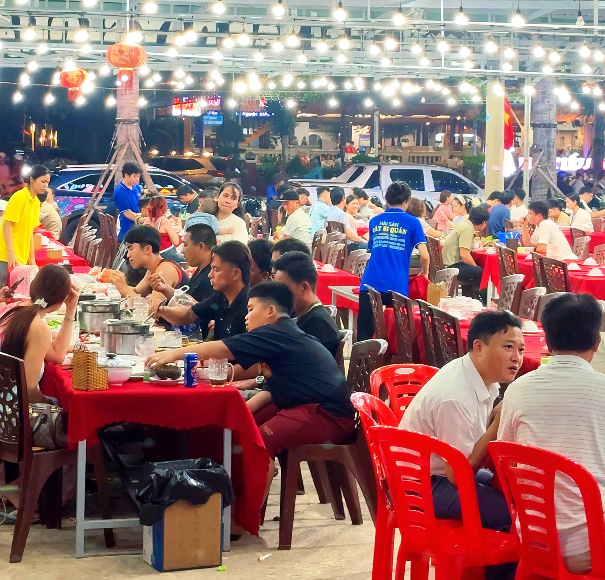
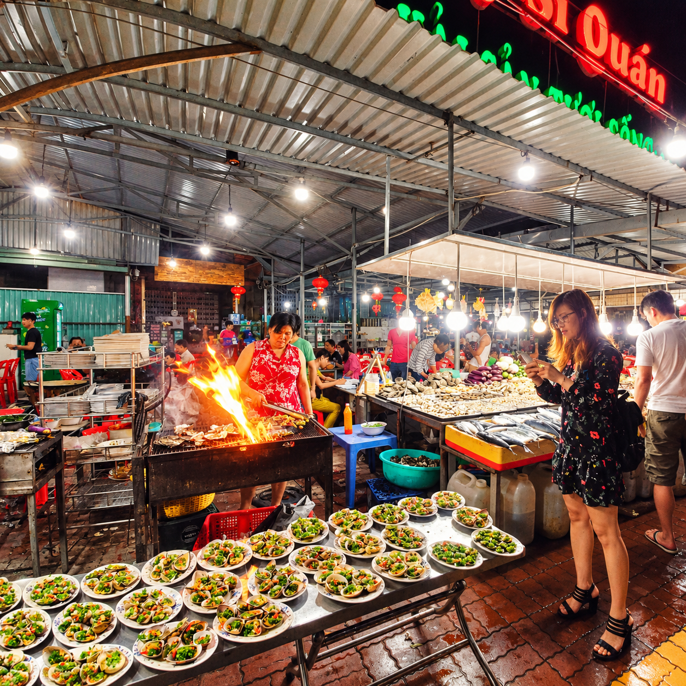
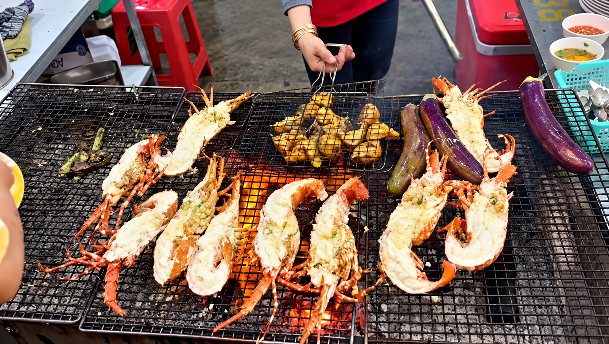
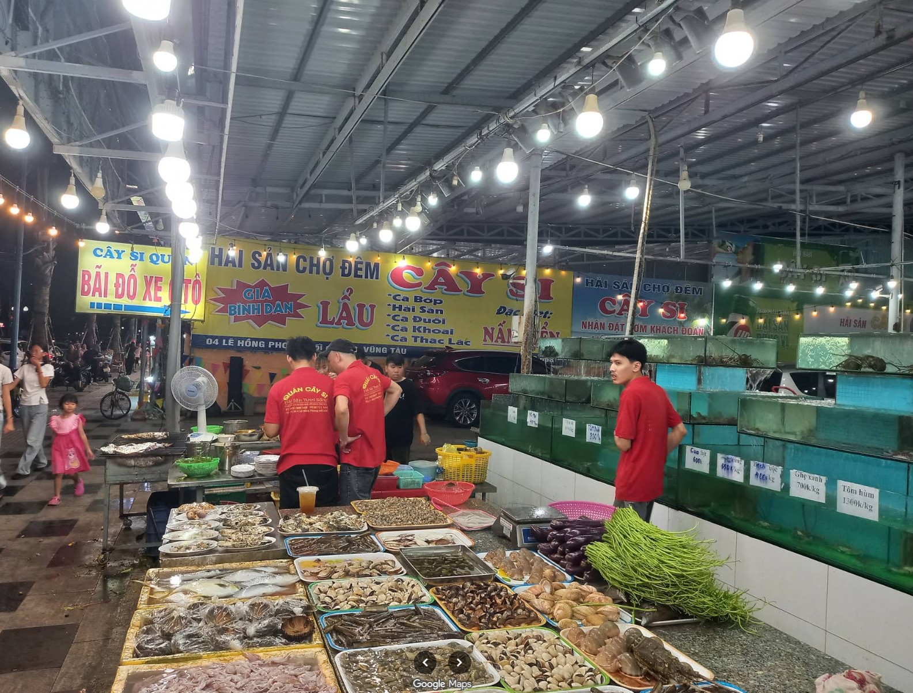
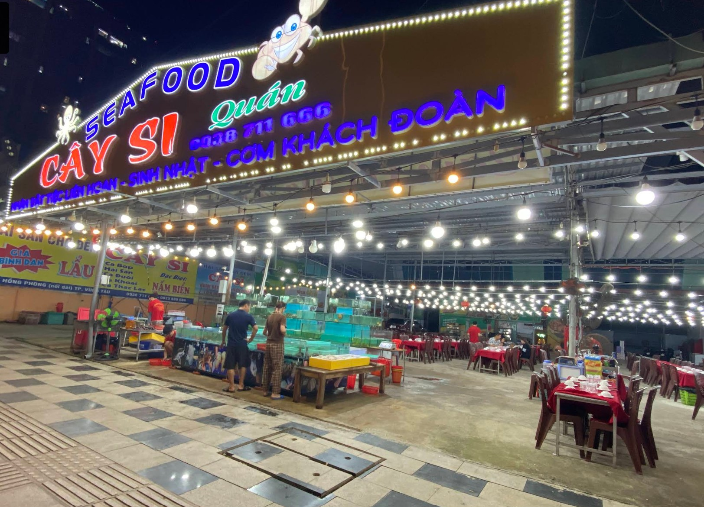
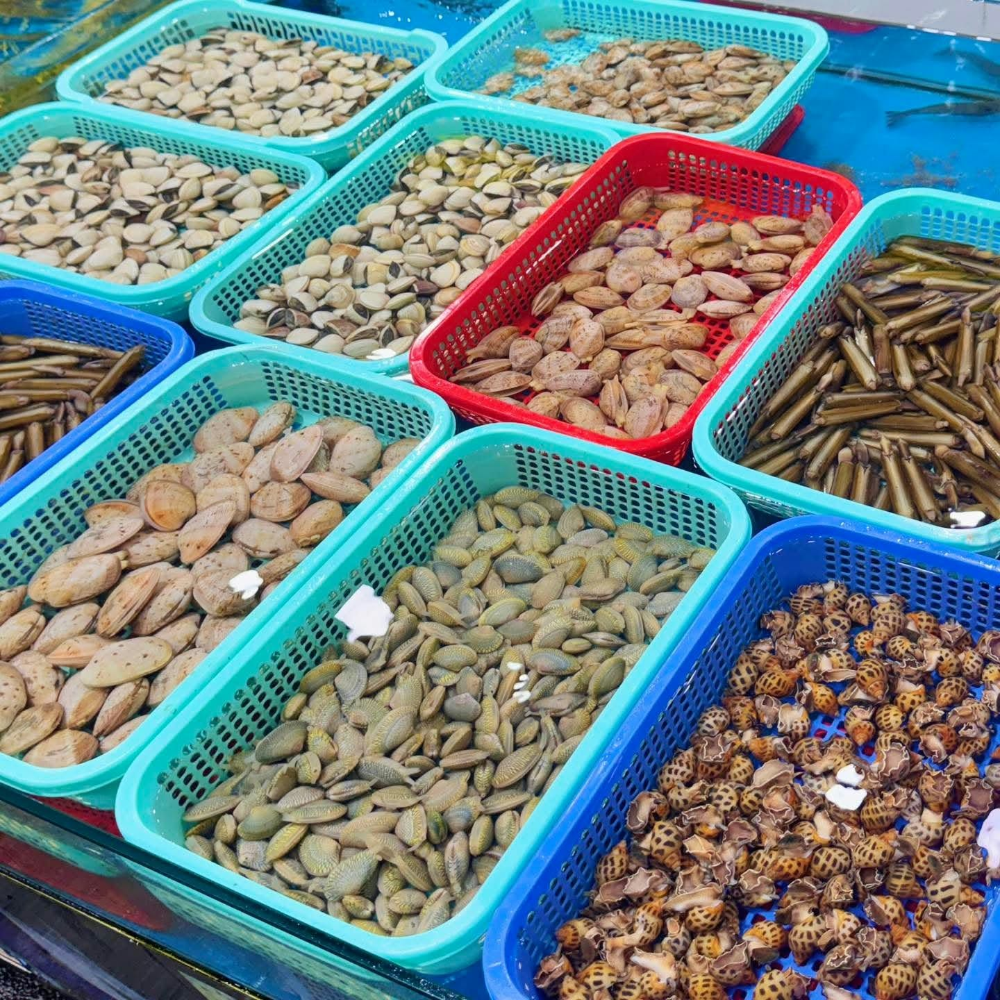
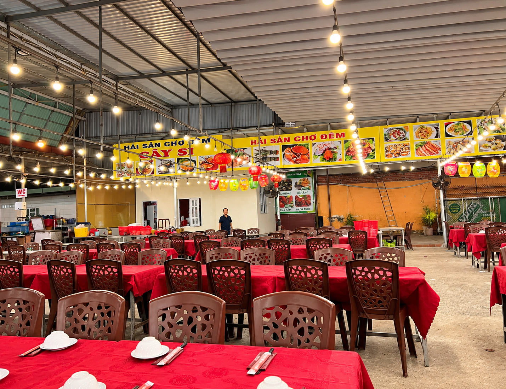
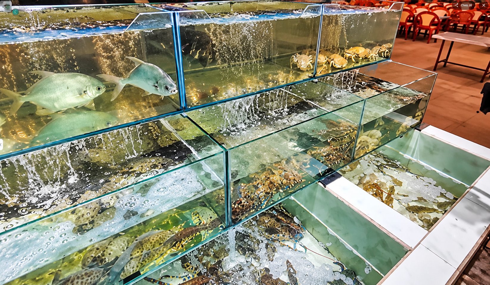

KHÔNG GIAN & TRẢI NGHIỆM
Đến vì vị biển. Ở lại vì niềm vui.
Một cuộc hẹn ngon hơn khi mọi người cùng quây quần. Tìm hiểu Cây Si và liên hệ trước để sắp xếp bữa ăn phù hợp.
Xem hình ảnh trên Facebook ↗
CÂY SI / COASTAL DININGTHE MOMENTS / 01
Không chỉ là một bữa ăn.
Gia đình quây quần, bạn bè rôm rả, các buổi liên hoan và hẹn gặp — Cây Si là nơi dành cho những khoảnh khắc cùng nhau.









06 / GHÉ CÂY SI
Cây Si cách tháp Tam Thắng 300m
Từ Tháp Tam Thắng, ghé Cây Si tại số 4 Lê Hồng Phong Nối Dài. Hai điểm hẹn gần nhau, cho một buổi dạo biển và thưởng thức hải sản.
HẸN NHAU Ở CÂY SI
Một bàn ăn, ngàn chuyện vui.
Bạn đang lên kế hoạch cho một bữa ăn bên gia đình, bạn bè hay khách đoàn? Gọi cho Cây Si để trao đổi và đặt bàn.
Giờ mở cửaHằng ngày10 giờ sáng – 1 giờ khuya
Điện thoại
Địa chỉSố 4 Lê Hồng Phong Nối
Dài,
Vũng Tàu, Việt Nam
Vũng Tàu, Việt Nam
Kết nối với chúng tôi